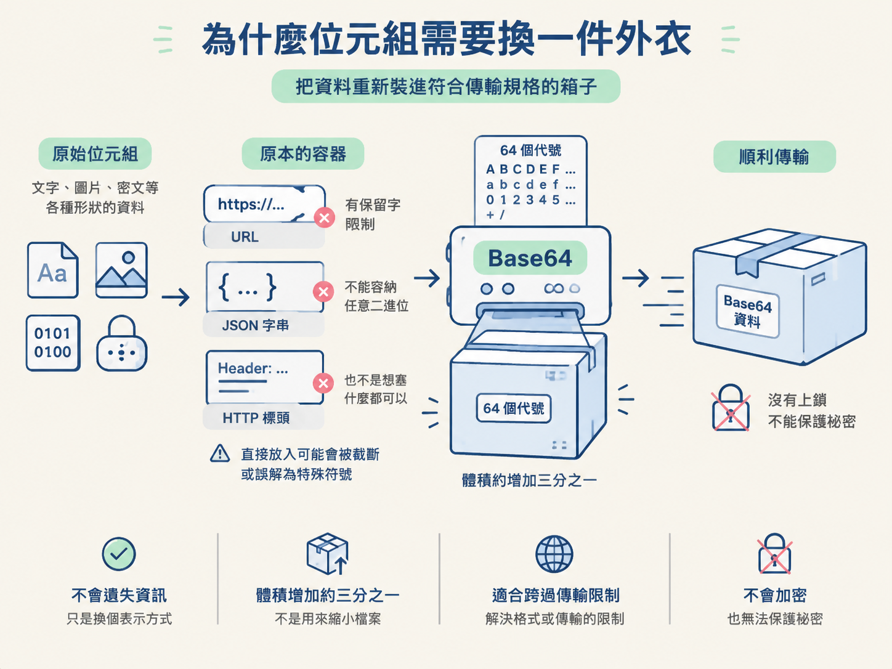
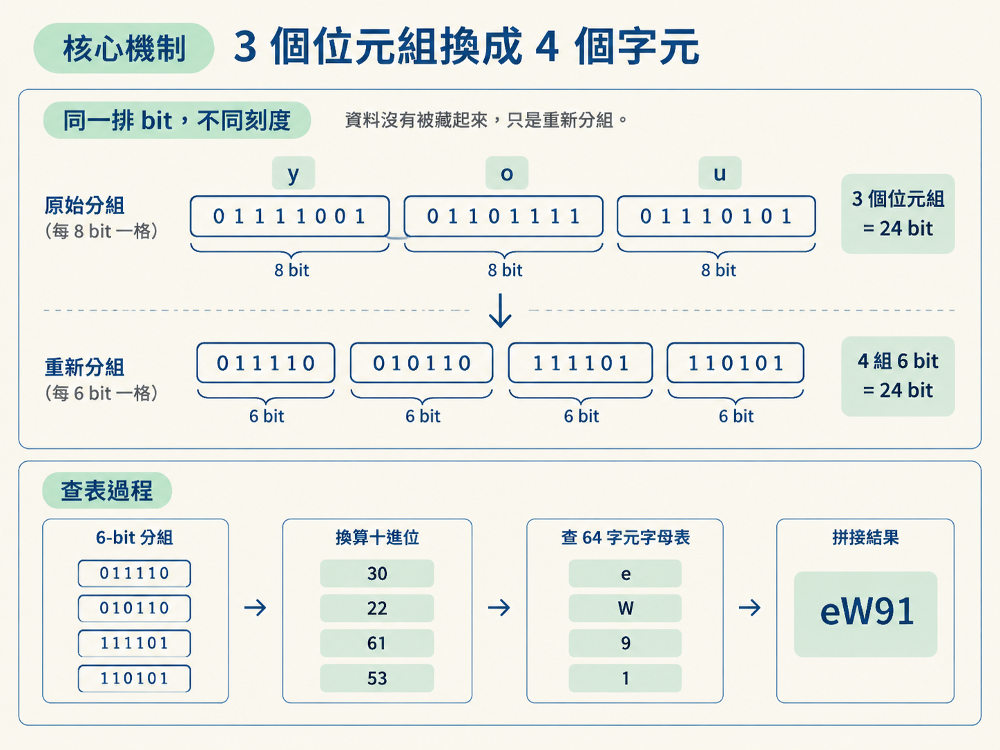
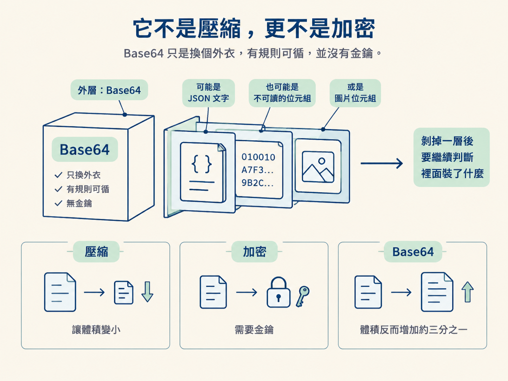

看懂 Base64 的字母表與「3 個位元組換成 4 個字元」的分組規則，並能使用 Python 的 b64encode 與 b64decode 完成編碼、解碼。
你在 DevTools 的 Network 面板追查請求，發現某枚 cookie 的值是 eyJ0eXAiOiJKV1QifQ。它看起來像亂碼，也很容易被誤認為加密結果；但丟進 Base64 解碼器後，卻能直接還原成可讀的 JSON。
這正是分析網站資料時常見的岔路。從抓取請求、觀察反爬機制，到逆向參數格式，你得先判斷眼前的字串究竟只是編碼，還是真的經過加密。認錯了，就像把普通紙盒當成保險箱，花了半天找鑰匙，其實拆開包裝就能看到內容。
上一節的 URL 編碼，主要處理網址裡具有特殊意義的字元。Base64 面對的範圍更廣：文字、圖片位元組與加密後的密文，都能換成一串方便傳輸的文字。看懂它的規則，便能在 DevTools 裡快速辨認這層包裝，決定接下來該直接解碼，還是繼續追查真正的加密流程。
不同傳輸格式都有自己的限制。URL 有保留字，JSON 字串不能直接容納任意二進位資料，HTTP 標頭也不是想塞什麼位元組都可以。圖片或密文若直接放進這些位置，可能遭到截斷，也可能被當成具有特殊用途的符號。
Base64 的做法，是準備一張只有 64 個字元的固定代號表，再用這些代號重新表示原始位元組。無論輸入是文字還是二進位資料，輸出都會變成一串文字，方便放進原本不適合傳送二進位內容的地方。
這種轉換不會遺失資訊，但會讓資料體積增加約三分之一。它適合用來跨過格式或傳輸限制，卻不適合拿來縮小檔案，也不能拿來保護祕密。可以把它想成把物品重新裝進符合寄送規格的箱子：內容沒有變少，也沒有上鎖，只是更容易送出去。

標準 Base64 使用以下 64 個字元，而且順序固定。解碼時，就是依照這張表把字元換回數字：
| 字元 | 索引範圍 |
|---|---|
A–Z | 0–25 |
a–z | 26–51 |
0–9 | 52–61 |
+ | 62 |
/ | 63 |
= 不在這 64 個字元裡。它不代表資料，只負責在尾端補位。
為什麼剛好是 64 個字元？因為 64 是 2 的 6 次方，所以每個 Base64 字元都能代表一組 6 bit。這個「6 bit 一組」的設計，就是整套轉換機制的核心。
一個位元組有 8 bit。Base64 每次讀取 3 個位元組，總共得到 24 bit，再把它切成 4 組，每組 6 bit。每一組都會得到一個介於 0 到 63 的數字，接著拿這個數字查字母表，換成對應字元。
換句話說，它只是把同一排 bit 改用不同刻度切割：原本是每 8 bit 一格，現在改成每 6 bit 一格。資料本身沒有被藏起來，只是重新分組。
以 you 為例。三個字元的位元組分別是 y=0x79、o=0x6F、u=0x75。展開成二進位後是 01111001 01101111 01110101。
把這 24 bit 從頭切成四組，會得到 011110、010110、111101、110101：
| 6-bit 分組 | 十進位 | 對應字元 |
|---|---|---|
011110 | 30 | e |
010110 | 22 | W |
111101 | 61 | 9 |
110101 | 53 | 1 |
依序拼起來，就是 eW91。因此，you 經過 Base64 編碼後會變成 eW91。只要抓住「24 bit 重新切成四組 6 bit」，就不必死背結果。

輸入長度不一定剛好是 3 的倍數。當尾端只剩 1 或 2 個位元組時，Base64 會用 = 補齊輸出，讓字元總數維持 4 的倍數。
| 尾端剩餘 | 輸出 | 例子 |
|---|---|---|
| 剩 1 個位元組 | 2 個字元 + == | youy → eW91eQ== |
| 剩 2 個位元組 | 3 個字元 + = | （無） |
| 剛好整除 | 4 個字元、不加 = | you → eW91 |
這也提供了一個實用的辨識線索：標準 Base64 的完整輸出長度通常是 4 的倍數，尾端也可能出現一個或兩個 =。不過，實務上的字串有時會省略補位，因此不能只因為長度不符就立刻排除。
理解分組方式後，可以直接用 Python 的 base64 模組驗證。b64encode() 接收的是位元組，因此文字要先呼叫 .encode()；編碼結果仍是位元組，如果要顯示成一般字串，再呼叫 .decode()。
import base64
…
# 案例2
s = "you!!!!!!!!!!!!!!!!!!!!!!!!!!!!!!!!!!!!!!!!"
ret = base64.b64encode(s.encode()) # 字节处理
print(ret.decode())執行後會得到一串以 eW91 開頭的結果。這正好對應前面算出的 you：
eW91ISEhISEhISEhISEhISEhISEhISEhISEhISEhISEhISEhISEhISEhIQ==解碼時，b64decode() 會把 Base64 文字還原成位元組。若內容原本是文字，還要再用 .decode() 轉回可讀字串。
從 DevTools 複製出來的 Base64 有時會少掉尾端的 =。這時若長度不是 4 的倍數，直接解碼可能出錯，必須先補位。下面的資料正好缺少兩個 =，程式會在解碼前把它們補回來：
# 案例2
data = "eW91ISEhISEhISEhISEhISEhISEhISEhISEhISEhISEhISEhISEhISEhIQ"
data += (4 - len(data) % 4) * "=" # "=="
ret = base64.b64decode(data)
print(ret)
print(ret.decode())如果要用一行處理補位與解碼，可以寫成 base64.b64decode(s + "=" * (-len(s) % 4)).decode()。其中 -len(s) % 4 會算出距離下一個 4 的倍數還差幾個字元；原本已經整除時，就不會多補 =。
當你在 Network 面板、cookie、請求參數或回應內容中看到一長串由英文字母、數字與少量符號組成的文字，可以先把 Base64 列入候選。若尾端帶有 = 或 ==，特徵會更加明顯。
這時值得嘗試解碼，因為結果可能直接變成 JSON 或其他可讀內容；也可能還原成圖片、密文等二進位資料。後一種情況不代表解碼失敗，而是說明 Base64 只是外層容器，裡面的資料本來就不是文字。
反過來說，若目標是隱藏內容、防止修改或縮小資料，Base64 都不是合適工具。字串長得像 Base64，也不表示一定能解出有意義的文字；辨識特徵只能幫你決定是否值得測試，不能代替實際解碼與內容判讀。
Base64 不是壓縮。它通常會讓資料增加約三分之一。以 you 為例，原本是 3 個位元組，編碼後卻需要 4 個字元。它解決的是傳輸形式問題，不是檔案大小問題。
Base64 也不是加密。它沒有金鑰，也沒有祕密。任何知道規則的人都能把內容還原，因此不能因為字串看不懂，就把它視為受到保護的資料。
不過，真正的加密結果也常再包上一層 Base64，方便放進文字格式傳輸。因此，解開 Base64 後若仍是一段不可讀的位元組，可能代表裡面還有另一層資料格式或加密內容。分析流程不是到此停止，而是剝掉一層包裝後，再判斷裡面究竟裝了什麼。

Base64 使用A-Z a-z 0-9 + /這 64 個字元，把任意位元組改成每 6 bit 一組的文字表示。它每讀取 3 個位元組，就輸出 4 個字元；尾端不足時，再用=補位。you的編碼結果是eW91。
在「抓取 → 觀察反爬 → 逆向參數」的流程裡，Base64 應該放在「辨認資料表示方式」這一層。它能幫你把包裝拆掉，卻不能直接證明裡面沒有加密，也不能提供安全性。
標準 Base64 使用 + 與 /，但這兩個字元放進 URL 或檔名時可能造成問題，因此實務上還有更換字母表的變體。圖片也常以 Base64 形式直接內嵌在網頁中。下一節會繼續拆解這兩種實戰情境。